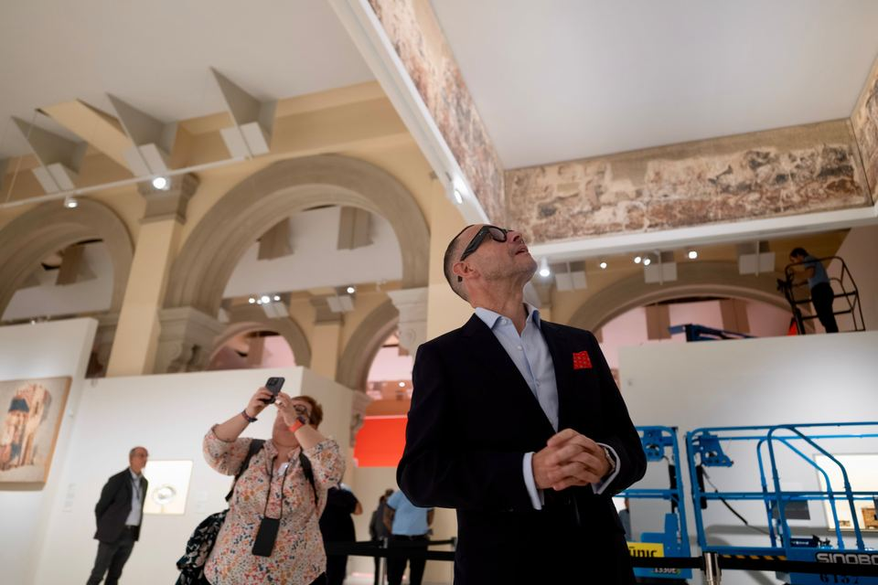

Pedro Olloqui, director de Cultura de Aragón: “Hoy es el momento cero del regreso de las pinturas de Sijena”

Los técnicos empiezan los trabajos de devolución de parte de los murales exhibidos en Barcelona
A las ocho de esta mañana, el director general de Cultura de Aragón, Pedro Olloqui , ya estaba a las puertas del Museo Nacional de Arte de Cataluña, en Barcelona. La fecha estaba marcada desde hace días en su calendario. Sesenta y seis años después de ser arrancadas del monasterio de Villanueva de Sijena , las llamadas “pinturas profanas”, una parte de los murales románicos que vistieron las paredes del monasterio de Sijena albergadas en el MNAC, empiezan a desmontarse para regresar a su casa original. Han pasado décadas de litigios eclesiásticos y civiles que culminaron el pasado 2025 con la ratificación del Tribunal Supremo de la sentencia del juzgado número 2 de Huesca que obligaba al…